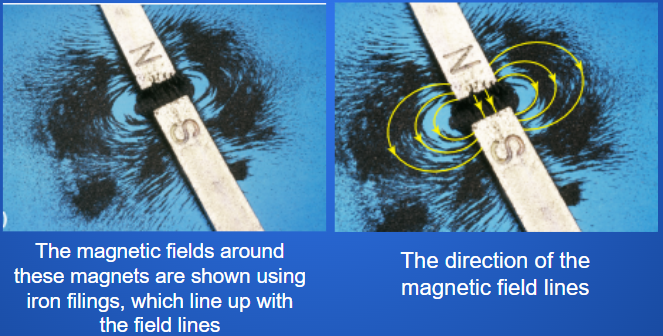
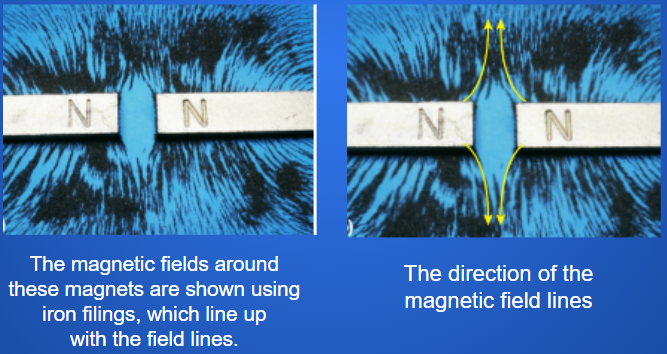

Magnetic Field
Magnetic fields are the three-dimensional region of space surrounding a magnet that will exert a force on magnetic objects. The magnetic field exists around the magnet whether the magnetic field is causing a force or not.
Callout
Properties
The compass needle is a permanent magnet. The pole of a magnet that points toward Earth’s north magnetic pole is labeled north. The other pole is labeled south. Unlike poles (north and south) attract each other, and like poles (north and north or south and south) repel each other. The force of repulsion or attraction increases as the magnets get closer to one another.
Since the north pole of the compass needle points north, it means that Earth’s north pole must actually be a south magnetic pole.
https://www.space.com/lava-flows-earth-magnetic-field-reversal.html
Magnetic Lines
Magnetic fields exist in three dimensions surrounding a magnet and are more intense at the poles. Magnetic fields are invisible, but can be represented in diagrams with magnetic field lines.
Magnetic field lines have the following characteristics:
• point from the north pole to the south pole outside a magnet, and from the south pole to the north pole inside a magnet
• never cross one another
• are closer together where the magnetic field is stronger
Callout
A compass can be used to map the direction of the field lines around a magnet. The compass needle will align itself along the direction of the field.

A magnetic field around a bar magnet with mini compasses on the field lines

A magnetic field around a horseshoe magnet with mini compasses on the field lines

A magnetic field around Earth with mini compasses on the field lines
When the north pole of a magnet is brought near the south pole of another magnet, the two magnets attract each other. This happens because of the way the magnetic field of one magnet interacts with the magnetic field of the other magnet.

When two magnetic poles (north and north or south and south) are brought close to one another, the magnets repel each other. This happens because of the way the magnetic fields of the magnets interact.

Callout
Magnetic Fields at Work
How are the Northern Lights (Aurora Borealis) produced?